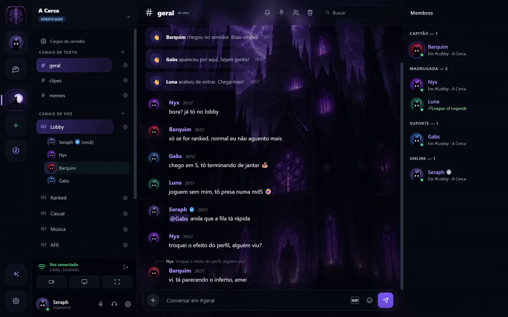

Fence
Um app para o grupo jogar junto: chamada de voz, chat, mensagem privada e compartilhamento de tela, com a cara de quem usa. Desenhei, programei, publiquei e mantenho tudo: o programa de Windows, o servidor, o app Android, a infraestrutura e o site.
O primeiro commit foi em 2 de setembro de 2026. Seis semanas depois, são cerca de 100 mil linhas, mais de 350 commits e a versão 0.3.123 no ar.

Voz e tela
Mídia num servidor LiveKit próprio. Tela até 1080p e 120 quadros, recebida só por quem escolhe assistir. Redução de ruído com rede neural em WebAssembly.
Som do jogo sem eco
Um módulo em C++ captura o áudio do Windows por WASAPI excluindo o próprio Fence. Quem assiste ouve o jogo, mas não ouve a chamada de volta.
Segurança
Senhas com argon2, sessões JWT, 2FA obrigatório para administrador. Mensagens privadas ficam só com a dupla, nem a equipe lê.
Feito para jogar
Sobreposição dentro do jogo em Rust. Elo e partidas de Riot, Steam, FACEIT, Gamers Club e Leetify. Clipes do Allstar chegam na conversa.
Efeitos de perfil
Partículas, shaders e física rodando no cartão de cada pessoa. Passe o mouse ou toque para ver.
Por dentro
Cinco peças. Os apps falam com o servidor para conta, chat e presença, e com o LiveKit para áudio e vídeo. O servidor só emite o passe da sala, a mídia não passa por ele.
App de Windows
Electron e React. Módulos nativos para o que o navegador não alcança.
- React
- Rust: sobreposição
- C++: áudio
- three.js
App Android
Expo e React Native, com o mesmo visual do PC.
- React Native
- TypeScript
- LiveKit
Servidor
Node e Express atrás do Caddy, em Docker, num servidor em São Paulo.
- argon2
- JWT
- TOTP
- WebSocket
LiveKit
Encaminha áudio e vídeo entre as pessoas da sala, sem misturar nem gravar.
- SFU
- uma porta UDP
Integrações
- Riot
- Steam
- FACEIT
- Gamers Club
- Leetify
- Allstar
- Spotify
- YouTube
- ElevenLabs
Seis semanas
Algumas das versões que saíram até aqui, das 185 marcadas no repositório.
Primeiro commitVoz, tela e chat num servidor próprio.
Contas de verdadeE-mail confirmado, login com Google e Steam, 2FA para administrador.
Atualização silenciosaO app se atualiza sozinho a partir do próprio servidor.
Sobreposição nos jogosPainel por cima do jogo, escrito em Rust.
Temas animados e clipesShaders no fundo do app. Clipes do Allstar chegam na conversa.
Efeitos de perfilPartículas e física no cartão inteiro.
Tela de chamada novaGrade automática, câmera e barra de controles.
Mascote que falaAvisos falados na chamada, com voz gerada por IA.
App AndroidEm teste interno na Play Store.
Denúncia e proteção de menoresDenunciar direto no app, com prioridade para casos graves.
0.3.123, no arTela lisa em placa AMD: o Fence passa a controlar o encoder.
Com o que eu trabalho
Linguagens
JavaScript, TypeScript, Rust, C++, PHP, SQL.
Tempo real e mídia
WebRTC, LiveKit, WASAPI, WebAssembly, Web Audio.
Interface
React, Electron, React Native, Expo, three.js, WebGL, GSAP.
Servidor e infra
Node, Express, Docker, Caddy, Linux, GitHub Actions.
Segurança
argon2, JWT e JOSE, TOTP, OAuth, revisão de acesso e privacidade.
Vamos conversar
Projeto, vaga ou ideia: contato@fencenetwork.tech